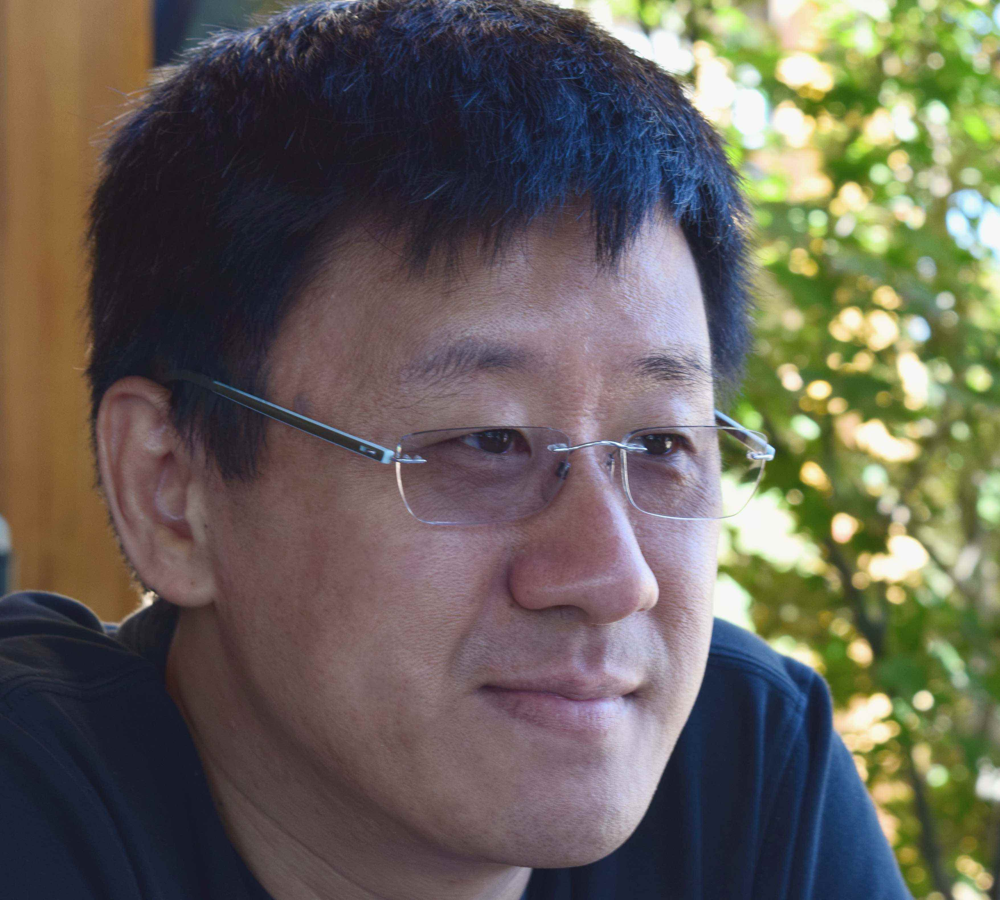

Margaret-Anne StoreyMargaret-Anne Storey is a Professor of Computer Science and the Director of the Software Engineering program at the University of Victoria. She holds a Canada Research Chair in Human and Social Aspects of Software Engineering and currently holds the Lise Meitner Guest Professorship at Lund University in Sweden. Her main research goal is to understand how technology can help people explore, understand, and share complex information and knowledge. She evaluates and applies techniques from knowledge engineering, social software, and visual interface design to applications such as collaborative software development, program comprehension, biomedical ontology development, and learning in Web-based environments. Dr. Storey regularly collaborates with high tech companies to ensure real-world applicability to her solutions. |
|

Zhendong SuZhendong Su is a Professor in Computer Science and a Chancellor's Fellow at the University of California, Davis. He received his PhD in Computer Science from the University of California, Berkeley. His research focuses on developing methodologies, practical techniques and tools for improving software quality and programming productivity. His work has been recognized with an EAPLS Best Paper Award, multiple ACM SIGSOFT Distinguished Paper Awards, an OOPSLA Best Paper Award, a PLDI Distinguished Paper Award, an ACM CACM Research Highlight recognition, an NSF CAREER Award, a UC Davis College of Engineering Outstanding Faculty Award, an IBM Software Quality Innovation Award, a Microsoft SEIF Award, and a Google Faculty Award. He served as an Associate Editor for ACM TOSEM, co-chaired the 2009 Static Analysis Symposium, program chaired the 2012 International Symposium on Software Testing and Analysis, and program co-chaired the 2016 International Symposium on the Foundations of Software Engineering. |